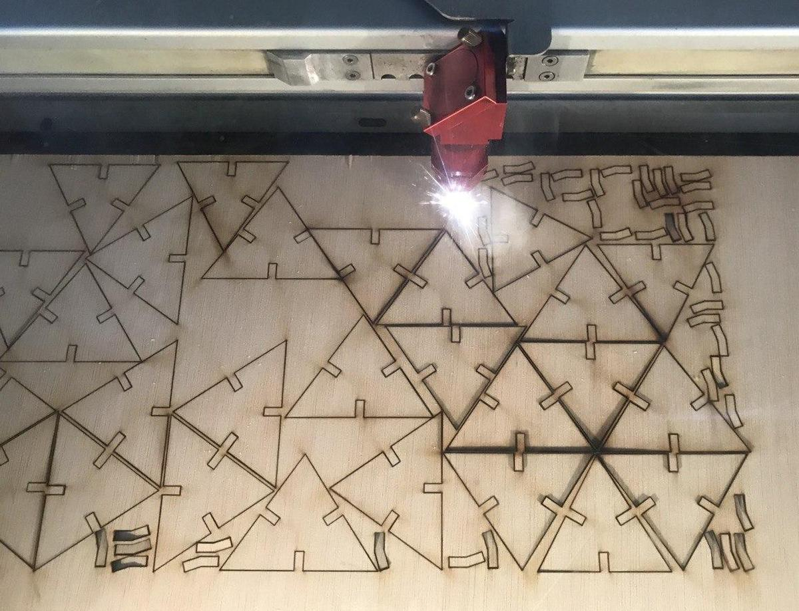
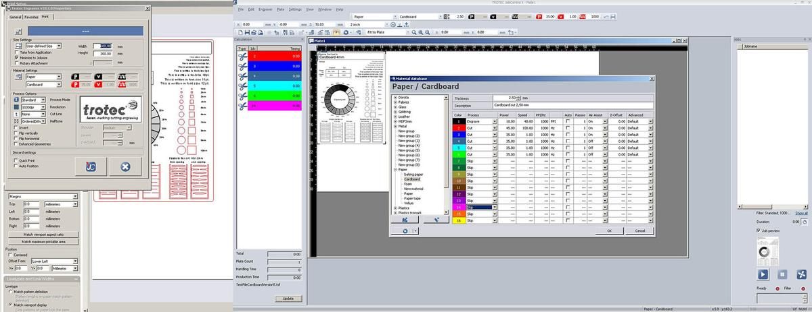
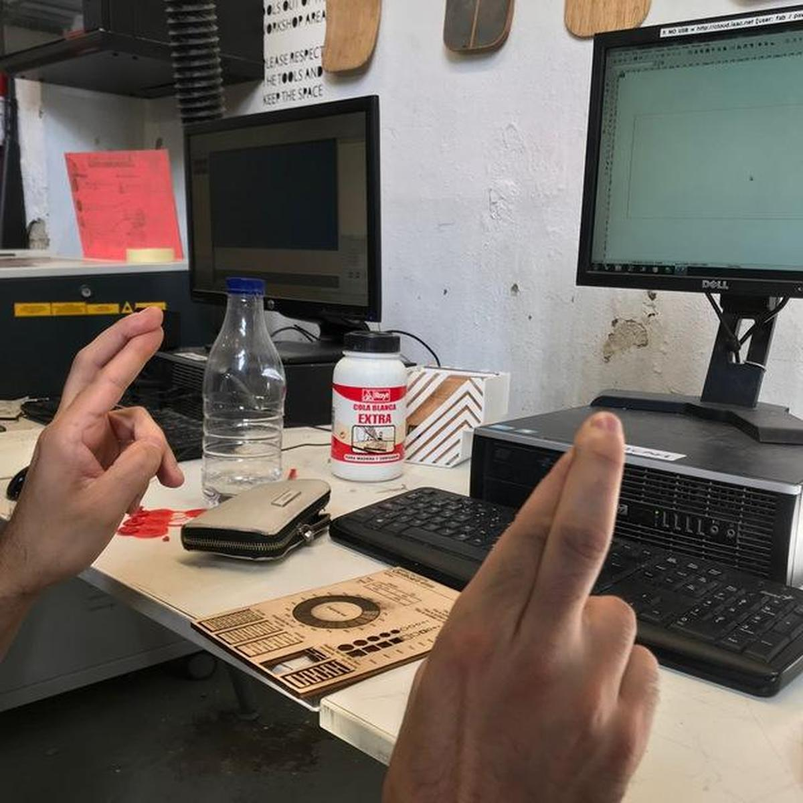

Computer-controlled cutting
This week is about exploring the possibilities of the computer-controlled cutting machines present in Fab Labs : the lasercutter and the vinylcutter. The first (group) assignement is to understand how the machines work and to obtain some of the values (specific to these machines) necessary to properly prepare the files before sending them to the machines. The second (personal) assignement is to design, lasercut, and document a parametric construction kit, and to cut something with the vinylcutter.
Lasercutter
The laser cutter is an excellent machine: it gives quick results, it is easy to learn, it works with different types of material (wood, acrylic, cardboard, etc.) and the cutting is very precise. Using joints allows you to go from 2D to 3D objects. It makes the laser cutter one of the best machines for quickly prototyping an idea.

Basics of lasercutting
Security
Because the lasercutter is fun and easy to use, it's also easy to forget that it can be dangerous. Here are some basic rules that accompany the use of the machine:
- Do not leave the machine unattended
- Cut only materials that you know are safe (no chromium, no carbon, no PVC, no PVP)
- Always use the filter and wait for the smoke to disappear before opening the cover
- Make sure you know what to do in case of fire
Focus
The focus is calculated based on the distance between the material and the laser. It must be adjusted before any cutting, depending on the thickness of the material.
Setting the focus is a mechanical & low-tech process, the idea is simply to obtain the distance value between the nozzle and the material.
Speed & power
Speed and power are the two parameters that we have to adjust according to the desired results. The speed is defined in millimeters per second (0-400) and the power is defined in (a relative) percentage (0-100%). To cut something big, you will need to set a high power and a low speed, so that the laser stays longer at the same points and burns the material more. On the other hand, to slightly engrave, set a high speed and a low power, so that the laser does not have enough time to burn the material.

Kerf
The laser burns away a portion of material when it cuts through. This is known as the laser kerf and ranges from 0.08mm – 1mm depending on the material properties and thickness. It is super important the know the kerf value and to integrate it into the design, if we want to cut things perfectly.
Get to know the machine
I was part of two different groups for the group assignement, simply because I was around and it's always good to know a bit about the differences between the machines.
Trotec Speedy 100
The first group I'm part of is composed by Arman, Benjamin, David, Minh Tue, and me.
We used this test file provided by the instructors to test the lasercutter Trotec Speedy 100 with different materials. Here are the specs of the machine:
- Work area: 600 x 300mm
- Height: 132mm
- Laser power: 12-60W
We chose to proceed with Cardboard 4mm and Plywood 4mm because we can find nice leftovers of those materials. For the Material Settings in TROTEC JobControl, we followed the information on the Laser Cut Sample at the Fab Lab. The parts to be engraved were color-coded with black, and the parts to be cut were color-coded with red.

Multicam 2000
And the other group I'm part of is composed by Bruno, Marco, Roger, and me.
Our idea was to use one of the Trotec machines, either the 100 or the 400, but they were being used so we finally decided to do it on the old and huge Multicam 2000. Our instructor Mikel Llobera helped us throught the process. This would have been really impossible without him, given the complicated interface of the machine, not to mention that some parts of it are not working properly.
On the multicam, you have to go through it's own software called EnRoute, that turns a DXF file into gcode that the machine can read. With EnRoute open and connected to the machine, you can load the file from it's 1980's-style handheld interface, which is both cumbersome and amusing at the same time.

Once we had the piece on EnRoute, after a few crashes of the software due, we think, to the amount of different lines on the design, we learned that we would have issues with raster on that machine, so we had to remove the parts of the design that were supposed to be rastered.
Values
Here are the values we've collected, with the Multicam and the Trotec.
| Machine | Material | Technique | Speed | Power |
|---|---|---|---|---|
| Multicam 2000 | Cardboard 4mm | Cut | 100 | 80 |
| Trotec Speedy 100 | Plywood 4mm | Engrave | 100 | 80 |
| Trotec Speedy 100 | Plywood 4mm | Cut | 1 | 75 |
| Trotec Speedy 100 | Carboard 4mm | Engrave | 100 | 60 |
| Trotec Speedy 100 | Carboard 4mm | Cut | 1 | 60 |
Calculate the kerf
| Material | Intended | Actual | Difference | Kerf (difference/10) | Offset (kerf/2) |
|---|---|---|---|---|---|
| Cardboard 2mm | 100mm | 95mm | 5mm | 0.5mm | 0.25mm |
| Cardboard 4mm | 100mm | 95mm | 5mm | 0.5mm | 0.25mm |
| Cardboard 6mm | 100mm | 95mm | 5mm | 0.5mm | 0.25mm |
A parametric construction kit
Design, lasercut, and document a parametric construction kit, accounting for the lasercutter kerf, which can be assembled in multiple ways.